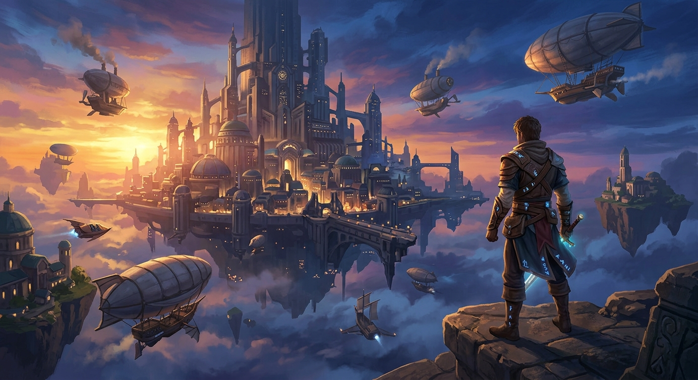

Aetheria: Echoes of Time
Un'avventura dinamica tra passato, presente e futuro dove ogni scelta plasmerà il destino della galassia.

Informazioni sul Gioco
Sviluppato da un team indipendente di studenti appassionati, Aetheria: Echoes of Time è un videogioco di ruolo d'azione (ARPG) isometrico in grafica stilizzata. Il giocatore veste i panni di un viaggiatore temporale alla ricerca dei frammenti di cristallo perduti per salvare l'universo dall'implosione.